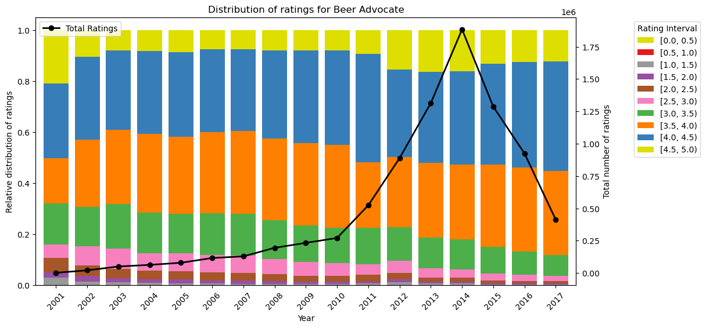
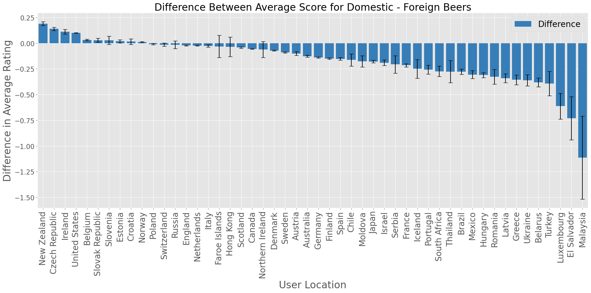
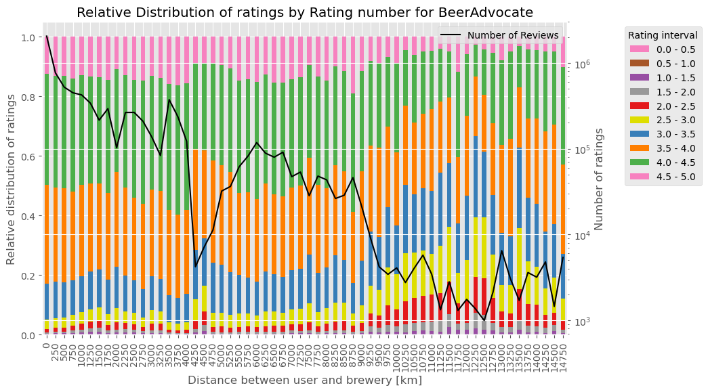

In this part of the analysis, we want to investigate how the ratings provided by a user change over time. This can be shown by plotting the rating number on the x-axis and the relative distribution of ratings on the y-axis. In this section we would also have a second axis showing the total amount of ratings provided at the given rating number.


The plots show that the relative distribution of extreme ratings, such as the top- and bottom-tier, decreases when the rating number increases. We can also see that the reviewers in Beer Advocate tend to provide a higher rating on average, than the reviewers in Rate Beer. Later on we will see that this interesting finding could be due to the difference in the user's origin. Nearly all the users in the BeerAdvocate database are from the US whereas the distribution of the users' origin in Rate Beer is a bit more diverse. Before we make any conclusions on how the number of reviews provided might affect the rating provided, we should look into whether there exists an overall change in the relative distribution of ratings over time regardless of the number of ratings provided earlier on.

For the Beer Advocate dataset we can see an opposite tendency of previous finding, as the amount of top-tier ratings increases over time. The previous finding can therefore not be explained only by the change in ratings over time. Furthermore, a high spike in the number of reviews in 2014 indicated that a lot of the users in BeerAdvocate has provided several reviews during that year. For the distribution of ratings in the Rate Beer dataset there does seem to be a similar tendency as the previous plot of the relation between rating number and rating distribution. The increase in number of ratings provided exhibits a more linear trend compared to the Beer Advocate dataset. For the Rate Beer dataset we can not conclude that the amount of rating provided is caused by the rating number as there appears to be a similar trend over the years, which could be caused by other factors such as an increase in the amount of premium beers available. If beers in general tend to have a higher standard, this could make it hard to differentiate between the different beers thus could lead to a reduction of top- and bottom-tier ratings over the years.
As we observed, experience seems to play a significant role in how, and particularly how well, individuals rate their beers. However, it is fair to question whether the total number of previous ratings is truly a perfect measure of a user's experience. While it certainly provides a useful indication and is a legitimate estimator, we wondered if there might be a more sophisticated way to identify experienced users.
As humans, we can often tell whether someone knows what they are talking or writing about, especially when we ourselves have expertise in the subject. This suggests that it might be possible to infer a type of "experience level" from the text of reviews. There are numerous resources on how to describe beer, and for "beer sommeliers," there are even specific guidelines on how to assess and articulate beer characteristics.
We therefore created a list of these words that are most likely to be used by people that know quite a lot about beer. We then split the users into two groups: The experienced and the inexperienced users.
Experienced users are those that:
With this definition in place, we are able to proceed with further analyses based on this experience-based classification.

We can see, that just 6.4% of the users are considered expert users with this metric. On the other hand more than two thirds of all the ratings are written by these users. This means that most of the ratings on the platform are written by a small fraction of the users with a consistent interest in beer. Concerning their rating behavior, in the middle plot we can see that there is a slight difference, as experienced users rate 0.1 points worse on average. But we have to investigate further in this.
We can make a more in-depth analysis by calculating statistics for both groups for every beer style individually. Like that we could see, whether there are beer styles that are "beginner-friendly" or which grow on you with time but might not suit your taste when you first try them. In the following plot we first show what proportion of ratings of each group which beer styles make up.

In the plot the beer styles are ordered by the total number of ratings for that style, meaning that "American IPA" is the beer styles which the most ratings are about. We can already learn quite a lot from this plot. Interestingly, the only 3 beer styles that make up a clearly larger proportion of the ratings among inexperienced users are also the 3 beer styles that are generally rated the highest. This means that particularly popular beers are even more popular among inexperienced beer users than among experienced beer users. This also makes sense, because if you are just starting to get interested in beer, you are unlikely to start with a specialty beer, but rather drink a beer that is available in the supermarket. Conversely, the difference for all other beers is either negligible or the beer style makes up a larger proportion of the experienced raters than the inexperienced ones. This gives us some confidence that the word metric we have established seems to correspond to our natural understanding of “experience”. But let us now turn to the mean rating. Just as we showed the difference in the proportions between the two groups in the previous plot, we will now show the difference in the mean rating between the two groups for the beer styles.

This plot provides perhaps the most interesting insight so far. We find that experienced users rate almost all beer styles lower on average than inexperienced drinkers, with the exceptions of "Witbier" and "American Adjunct Lager." This suggests that with greater experience, drinkers tend to have higher standards for their beers. Thus, when reading a review from an inexperienced versus an experienced beer drinker for the same beer, one should consider this potential bias in shaping expectations or assessments.
We already observed this difference in average ratings at the beginning when we calculated the overall average rating across all beer styles. Now, however, we can see the breakdown by each individual beer style. This additional information can help us better account for rating bias when assessing a particular review.
Another factor that can enter into the user's evaluation as a bias is the country from which he or the beer comes. It is hard to deny that the nationality and culture of the country of origin can have a major influence on the evaluation of any cultural asset - and beer is a foodstuff and therefore also a cultural asset. So it could be that ratings from users from more wine-oriented countries such as France and Italy are different to those from more beer-oriented countries such as the northern European states. So let's start with a simple analysis and look at the average rating of users from a particular country.
We can already observe some interesting things here. For example, we can see that the countries whose users tend to give critical ratings on average are largely located in Europe. If we zoom in a little closer to Central Europe, we can see that countries such as Germany, Denmark and the Czech Republic, where beer culture has always been very pronounced, tend to give more critical ratings on average.
Interestingly, this contrasts with the average scores of southern European countries traditionally associated with wine, such as Italy, Greece, Spain and, to a certain extent, France. Here we see very good average scores. This could potentially be linked back to the analysis of experienced and inexperienced beer drinkers, where we have already established that greater exposure to beer tends to lead to lower average scores rather than better ones.
Although this basic analysis has already produced interesting results, it is worth going into more depth, especially on the subject of patriotism: Do users from countries with a strong sense of national pride rate beer from their own country better than beer from abroad? Are there certain beer-loving countries that give themselves particularly high marks? Or are there countries that find beer from certain other countries particularly bad?
To answer these questions, we divide the ratings into two groups: those about domestic beer and those about foreign beer. A rating belongs to the former group if the country of the brewery of the beer matches that of the user. In a first analysis, we first look at the proportions of domestic beer and foreign beer in the data set, both in general and grouped by country.


We find that the distribution of ratings between foreign and domestic beers is fairly balanced (roughly 46%-54%). This is generally quite good because it allows us to make statements about both groups based on a substantial amount of data.
However, we also see that this is also due to the fact that we treat the USA as one country while we treat all European countries (which would only form a similarly large economic area as the USA if they were together) individually. This is because foreign beer dominates the ratings in almost all countries. In a few European countries with a pronounced beer culture, such as Germany, Poland, Belgium and England, it is around 50/50. The big outlier here, however, is the USA, where around 80% of the ratings are for domestic beer. As already mentioned, one of the reasons for this is that we also consider beer to be domestic if it comes from a different US state than the user rating it. We will therefore later devote ourselves to an in-depth analysis of the USA in order to further examine this substantial part of our data.
Now, however, we don’t just want to look at the number of ratings but rather focus on the bias in the ratings themselves. In the following plot, we see the differences between the average rating for domestic beers and foreign beers by users from the country shown on the x-axis.
We observe some noticeable differences here. For instance, residents of New Zealand rate their own beers on average 0.2 points higher than those from outside New Zealand. The USA also rates its own beers on average more than 0.1 points higher than foreign beers. We can also see that the top 4 countries—New Zealand, the Czech Republic, Ireland, and the USA—all rate their own beer more than 0.1 points higher than foreign beer, and these are all countries with a strong sense of national pride.
On the other side of the spectrum, we initially find some more extreme values, such as in Malaysia, where users rate their own beers on average more than a whole point lower. However, we cannot consider these values truly interpretable, as they are based on very small data sets. This is also indicated by the very large confidence intervals.
Still, we find some interesting results here as well if we take the confidence intervals into account and ignore the very extremes. For instance, let’s look at Greece. In a previous analysis, we already found that users from Greece generally give a very high average rating across all their reviews. Additionally, the data set for users from Greece isn’t particularly small. Now, with this plot, we can observe that users from Greece rate their own beer on average almost 0.4 points lower than foreign beer. This is certainly interesting and should be considered when reading a review from Greece, whether it’s for a Greek beer or a foreign one.
Last but not least, we wanted to know the user-country-brewery-country pair that gives the best and the worst average ratings. We set a threshold requiring at least 1,000 reviews for each combination; otherwise, it’s considered non-representative. Click on the graphics to see, which countries love/hate which others beers.
Let’s move on to a final analysis, which focuses on patriotism and attitudes toward foreign beer. In our previous analyses, we consistently used only the RateBeer dataset. This was because almost all reviews in the BeerAdvocate dataset were from the USA, making such an analysis less meaningful or less reliable. Additionally, in the RateBeer dataset, we aggregated all U.S. states into a single country, so the USA was still by far the country with the most reviews.
However, in this next section, we want to shift our focus to the USA and examine the differences in ratings of domestic versus foreign beer across various U.S. states. For this, we will use data from both datasets. In a first overview analysis let's look how people from the US rate US and non-US beer on average.
This is an interesting initial finding. In a previous analysis, we already found that U.S. citizens rate their own beer on average more than 0.1 points higher than foreign beer (though this analysis was only for the RateBeer dataset). Now, with both datasets combined, we can see precise figures, and the difference is even more pronounced at around 0.18 points. 'Beer patriotism' in the U.S. thus appears to be quite strong. Let’s take a closer look at this, broken down by individual U.S. states.
This finding becomes even stronger here. There isn’t a single U.S. state that rates foreign beer higher than its own (although the difference in Louisiana is negligible). I find this quite impressive. There actually seems to be a kind of bias in the U.S. against non-American beer. This should definitely be taken into account when assessing beer ratings from the US.
We also wondered: in the U.S., there is a politically diverse landscape. The Southern states are generally considered more patriotic and are core states for the Republicans, the more conservative of the two major U.S. parties. So, might there be a difference in how citizens of Northern states and citizens of Southern states rate beer?
There is a difference in the rating of American and non-American beers between the Northern and Southern states, with both differences being around 0.175. So we can't conclude that there is a tendency that the difference in the rating of foreign/domestic beers of users from southern states would be more extreme than of users from northern states. However, it is noticeable that both categories are rated lower in the Southern states than in the Northern states.
We could already see this kind of result in the map plot about the US. What's visible there, interestingly, is that the beer-patriotism phenomenon seems to be especially common not in southern states, but in (south-)western US-states. So we have to conclude that, if one wants to take the patriotism-bias into account, he needs to differentiate between different US-states.
So far, we have only looked at countries in general or the distinction between foreign and domestic beers. However, it would also be interesting to conduct a more fine-grained analysis and ask whether the distance between the user’s home country and the brewery’s location has an impact on the rating. The assumption that geographically closer countries might share similar drinking cultures and, consequently, similar tastes in beer is not far-fetched.
Could it be that beers from breweries located closer to the user’s location are rated more highly because the user’s taste is more accustomed to the local beer culture? Or could the exact opposite be true, with beer drinkers seeking exciting new flavors from distant places? We aim to investigate this to determine whether the user-brewery distance is a significant bias.
The following plot illustrates the distribution of user ratings for beers from breweries at various distances. On the x-axis, you can see the distance categories of the breweries from which the corresponding bar is calculated. The different colored segments in the stacked bars indicate the frequency of each rating for breweries at a given distance from the user. However, it is evident that some bars are more meaningful than others due to being based on more data. Therefore, we have also included a line indicating the number of ratings for each user-brewery distance. We show the plot for both datasets on which our analysis was based, in order to be able to see whether there are any major differences.

We can indeed identify some trends. For example, we observe a peak of better ratings at a distance of approximately 4250 km to 4750 km. However, the line plot also shows a drastic decline in ratings, which can likely be explained by the distance between the USA and Europe. At this range, the Atlantic Ocean separates the two continents.
Beyond approximately 9000 km, the number of ratings also drops significantly, quickly falling below 1000 ratings per distance category. It is challenging to make qualified statements here, as the data is very noisy. However, if we focus on the range up to 9000 km and exclude the area around 4250 km to 4750 km, a few subtle trends can be identified.
Specifically, the distribution within the first 2000 km is slightly shifted upward compared to further distances. This suggests that within a radius of about 2000 km, there might indeed be a more homogeneous beer culture and a beer taste more similar to that of the user.
Next we look at whether the time of year, the season, has any influence on ratings. We grouped the ratings into months, as a less fine grained division into quarters would be very ingranular, and not enable us to see how trends develop as the year progresses, while a grouping into weeks or days would produce a lot of data and big dataframes. Let's first explore, if the time of year leads to a general rating "high" or "low", for example reviewers being more satisfied with their beer in the summer rather than the winter.
We see that the average ratings do not change with the month, at least not significantly, thus the hypothesis that the time of year has a general effect on the ratings in total does not hold, rather the results are kind of boring. However, lets also have a look at how the beers get rated throughut the year depending on the beer style.
Before we analyse the rating, let's first check which beer is a "summery" beer and which beers are "wintery", by comparing the amount of each reviewed by month. The graph below filters out beer styles which do not show a difference of at least 14 ranks throughout the entire year, in order to not crowd the graph with straight and uninteresting lines. The value of 14 was chosen as it offers a nice balance between not hiding important data and now not crowding the graph. The function also removes beer styles which have less than 500 reviews for at least one month, in order to not flood the analysis with beers which have few reviews, where the change in review count might not be significant.
Beers such as:
Let us now turn to the final section of our analysis. In the last three sections, we have extensively examined various types of biases among beer reviewers, but some might still wonder,
What's the point of all this? Who benefits from knowing whether a beer reviewer is biased in their decision?
As already mentioned in the introduction, this knowledge can, of course, be useful to individual users trying to determine which beers they might enjoy and which reviews they can trust. More importantly, however, this knowledge is particularly valuable for large corporations and a significant industry—the advertising industry.
If one can accurately assess a user's bias, this information can be incorporated into decisions about which beer to advertise to them and which not to. It is undeniable that bias plays a significant role in purchasing decisions (consider, for example, the stigmas associated with products from certain countries, and so on).
In the following section, we have compiled everything we have learned so far and attempted to build a kind of recommender system. This system is a neural network designed to predict, based on various features about the user and the beer—including bias features—whether a user would rate a beer higher or lower than their current average rating. This prediction could then guide decisions on whether to advertise a particular beer to the user—or not.
We trained the network on 230,000 ratings from the BeerAdvocate dataset, and it achieved the following results on a test dataset:
As with many of our other articles, we have included some additional information below for those who are interested in understanding how the predictions are made in detail, how our neural network is structured, and which features are taken into account.
Click on the boxes to learn more!